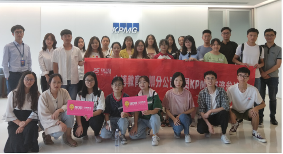
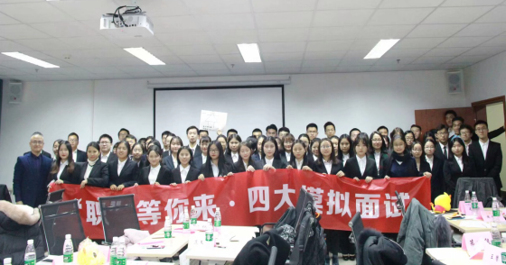
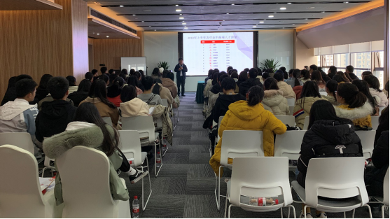
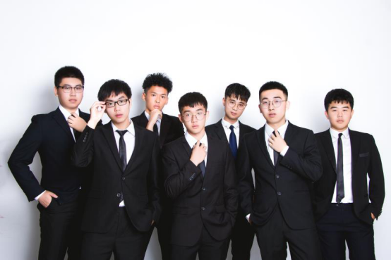

一、CFA®&FRM®介绍
1、CFA®简介
CFA® 全称 Chartered Financial Analyst （特许金融分析师），是全球投资业里最为严格与含金量最高的资格认证，被称为“金融第一考”。课程开设于1962 年，CFA® 证书对投资知识、投资准则及道德设立了全球性的标准，被广泛认知与认可。《金融时报》杂志于 2006 年将 CFA® 专业资格比喻成投资专才的“黄金标准”。《人民日报》在2018年将CFA®评为“十大最具含金量的证书”之一。
CFA®特许资格认证持有人通常就职于投资公司、互惠基金公司、证券公司、投资银行等，或成为私人财富经理。在中国大陆拥有最多CFA®特许资格认证持有人的雇主包括普华永道、中国银行、中国工商银行、中国国际金融有限公司、汇丰银行、中国中信、法国巴黎银行、瑞银、德勤、安永会计师事务所、中国平安保险、招商局集团、国泰君安证券股份有限公司等。
（1）CFA®课程设置
1 | 职业伦理 | Ethical and Professional Standards |
2 | 数量分析 | Quantitative Methods |
3 | 经济学 | Economics |
4 | 财务报表分析 | Financial Statement Analysts |
5 | 企业理财 | Corporate Finance |
6 | 固定收益投资分析 | Analysis of Fixed Income Investments |
7 | 权益类投资分析 | Analysis of Equity Investments |
8 | 衍生品 | Analysis of Derivatives |
9 | 其他类投资分析 | Analysis of Alternative Investments |
10 | 组合管理 | Portfolio Management |
2、FRM®简介
FRM®全称Financial Risk Manager（金融风险管理师），是全球金融风险管理领域的一种资格认证，由美国“全球风险管理专业人士协会”（GARP）在 1996 年开始设立。FRM®考试始于 1997 年，目前，全球至少有48000名FRM®持证人，且数量每年都在递增。2009年GARP官方将FRM考试分为PART 1和PART 2两级，每年5月份和11月份的第三个周六全球统一考试。
FRM®考试综合考查了学员包括风险管理概论、数量分析、金融市场与金融产品、定价与风险模型、市场风险测度与管理、信用风险测度与管理、操作风险测度与管理、基金投资风险、会计、法律等众多内容。
在国内，FRM®证书正日益受到国家金融监管机构以及各家金融机构的重视。对于金融监管层，中国人民银行和中国银监会均把金融风险管理、维系金融稳定作为银行监管的重中之重。对于大型金融机构，中国工商银行、中国建设银行、中国银行等国有商业银行纷纷将风险管理作为贯穿整个银行经营的核心。同时，各大证券公司也对金融市场的资产定价和风险管理高度重视。因此，金融风险专业人员的需求日益壮大。
（1）FRM®课程设置
1 | 风险管理基础 | Foundations of Risk Management |
2 | 金融市场与金融产品 | Quantitative Analysis |
3 | 数量分析 | Financial Markets and Products |
4 | 估值与风险建模 | Valuation and Risk Models |
5 | 市场风险管理与测量 | Market Risk Measurment and Management |
6 | 信用风险管理与测量 | Credit Risk Measurement and Management |
7 | 操作及综合风险管理 | Operational and Integerated Risk Management |
8 | 投资风险管理 | Risk Management and Investment Management |
9 | 金融市场前沿话题 | Current Issues in Financial Markets |
二、山东师范大学CFA®&FRM®实验班班级介绍
随着市场环境的变化，国家和企业也越来越重视大学生的实践能力，2019年，教育部更是提出“1+X”教育改革制度，提倡学历和证书结合，培养具有职业化能力的人才。因此，为深入贯彻我国关于培养高端金融人才的发展战略，提升我校大学生就业竞争力和职业化教育，山东师范大学CFA®&FRM®实验班自2019年开设以来，学校对班级招生和人才培养工作高度重视，现面向全校范围招录优秀学生组建班级。
我校CFA®&FRM®实验班级由山东师范大学和大型国际财经教育企业中博教育联合开办，由学校牵头，从广阔的教育平台引进优质的师资（中博教育提供），同时由继续教育学院落实教学安排、教学质量、招生选拔等工作。
中博教育成立于2004年，2017年更名为广州中博教育股份有限公司，15年以来专注于ACCA、CMA、CFA®、CPA、FRM等国际高端财经金融证书的教育，在全国开设 51 个直属分部提供教学服务，如北京、天津、上海、贵阳、武汉、昆明、太原、成都等，为全国各地各大高校的学子提供专业化是师资、便利化的教学。
山东师范大学自2019年面向全校进行招生选拔，每一年经过面试和考核然后组建一个国际金融精英班级（班级名额有限） ，CFA®&FRM®实验班注重每一节课的教学质量，使每位学员都能够充分掌握金融领域的专业知识。
第2期CFA®&FRM®实验班自2020年8月1日面向全校（不限专业）进行招生选拔，为有志于投身于金融行业发展的同学们提供优质的学习资源以及学习平台，进一步打破学科限制，提升我校学子的综合实力及就业竞争力。
三、CFA®&FRM®实验班培养目标
山东师范大学CFA®&FRM®实验班级结合多年的国际金融人才培养经验，并结合当前企业对大学生的能力要求而开办，是本科教育与国际职业教育接轨、国内学历教育与国际学历教育结合的一种全新模式，充分满足大学生全日制课程外的培养计划。
旨在培养适用于新时代人才需求的复合型金融人才，不仅要求学生具备完善的金融知识体系，更要重点培养将理论应用于操作的实践能力，提升我校大学生的综合竞争力。
其中，CFA®的人才培养目标为以投资组合经理为重点方向的高级专业人才，而FRM®的培养目标为能将知识和理论结合的风险管理专业人士，旨在培养一批具有高端金融证书资格认证、知识面广博、专业技能精深、适应现代商务需要、能在各大型跨国公司、金融机构、会计师事务所等行业从事投资理财、风险管理等工作，符合企业的用人需求和用人标准。
四、CFA®&FRM® 实验班教学和管理特色
山东师范大学CFA®&FRM®实验班由继续教育学院联合师资提供方中博教育开办，拥有全国顶级CFA®&FRM®讲师，拥有极其丰富的教学经验，所带班级通过率居全国领先水平。CFA®&FRM®同时获得了全球数百所知名大学的认可，在国内以及川内都有众多高校对CFA®&FRM®班级采取了高度的重视和认可，其中有山东农业大学、西南财经大学、成都理工大学、山东轻化工大学、西南科技大学、山东大学锦城学院等等。
CFA®&FRM®实验班级拥有独特的教学管理方式，主要包括：
1.精英化管理方式：CFA®、FRM®实验班定额招收学生，名额有限，独立成班，每个班配备一名班主任，处理同学后续学习资料发放、排课、注册、报考等事宜，同时执行严格的签到、习题课等管理制度；
2.丰富多彩的课外活动：凡FRM®或CFA®学员在学期间，将定期举办交流讲座、企业参观、节日酒会、案例分析大赛等活动，拓宽学员人脉交流范围，丰富学生课外学习生活；
3.名企实习推荐：中博教育不仅为个人和学校提供高品质的学历教育和职业培训，更为国内顶尖的投资银行、基金、商业银行、私募基金等金融机构提供培训，在业界拥有良好的口碑；
4.优秀师资：我校CFA®&FRM®是山东师范大学与国际财经教育企业中博教育联合开办，由学校牵头，从广阔的教育平台引进优质的师资--中博教育提供优质的教学师资,所有的CFA®&FRM®授课老师均满足以下条件：
（1）CFA®或者FRM®的持证人（多数为CFA®&FRM®双证持有者）；
（2）有金融行业相关工作经验及CFA®&FRM®高校教学经验；
（3）硕士及以上学历（多数老师毕业于中国C9、美国常春藤和英国G5高校）；
5.好学生奖学金计划：为鼓励学员高效率、高热情的投入学习，特开设CFA®&FRM®奖学金：
（1）CFA®优秀奖学金: CFA®总成绩在全球前10%及以上，或CFA®所有科目考试成绩均在70%及以上，奖学金3000元；
（2）FRM® Part1奖学金: FRM® Part1四门科目考试成绩均在1st,奖学金1500元；
FRM® Part2奖学金: FRM® Part2五门科目考试成绩均在1st,奖学金2500元；
成绩优秀的学员还可获得由师资提供方中博教育专有的奖学金机制。
五、CFA®&FRM®证书优势
1、CFA®&FRM®证书获国内外高度认可
世界金融市场对投资人才产生了前所未有的需求，投资人和雇主比以往任何时候更需要一个统一的标准来衡量金融从业人员的知识水平、诚信度和专业化程度，CFA®证书正是衡量这些的标准。FRM证书被国际职业人士所公认，能够证明持证人拥有做出客观风险分析及相关决策等风险管理必备的、完整的知识结构和能力。
2、政府政策支持
我国各大城市对CFA®&FRM®持证者都有相当大的政府支持，包括成都、重庆、北京、上海、广州、深圳、天津、西安等十多个城市的政府支持政策。其中在成都市凭3年以上用工合同等证明文件，可享受5万元安家费奖励，对持有CFA®、FRM证书到高新区工作满2年的金融人才，一次性给予3万元的补贴。优秀金融人才可享受税收、医疗保险、住房补贴等福利。
CFA®项目政策优势 | |
北 京 | 减免个人所得税，北京户口办理，子女可参加北京市高考； |
上 海 | 办理《居住证》《外国专家证》，享受医疗保障、子女就学、住房优惠等。 |
广 州 | 30万人民币奖励，5—30万的安家费或补贴 |
厦 门 | 安家补贴50万，个人所得税80%退还 |
成 都 | 凭3年以上合同等证明文件，可享受5万元安家费奖励。优秀金融人才可享受、税收、医疗保险、住房等福利。 |
西 安 | 新获得CFA®证书的金融从业人员，每人最高50万元的工作生活补贴。 |
FRM®项目政策优势 | |
北 京 | 减免个人所得税，北京户口办理，子女可参加北京市高考； |
上 海 | 个人所得税退税补贴户籍、居住证办理、子女入学、医疗保障、金融人才公寓入住； |
广 州 | 30万人民币奖励，5—30万的安家费、补贴 |
厦 门 | 紧缺型金融人才分别获得一次性40万、25万安家补贴；报考FRM®并取得相关资格，给予考试补贴。 |
成 都 | 对持有CFA®、FRM®证书到高新区工作满2年的金融人才，一次性给予3万元的补贴。 |
深 圳 | 在金融发展专项资金中每年单列5000万对于新获得金融资格证的金融人才，给予每人最高5万元补贴。 |
3、人才缺口优势
随着国际金融市场的变化，CFA®&FRM®人才在国内急缺，从各地政府政策支持来看，我国一线城市都相继引流CFA®&FRM®金融人才前去工作。据统计，未来十年中国将有100万复合型金融人才缺口；
4、就业优势
CFA®&FRM®就业前景十分可观，FRM®持证人就业主要集中在商业银行、学术机构、投资、保险等行业，其中大部分以服务于大型企业与金融业工作为主。CFA®持证人就业主要集中在投资公司、基金公司、证券公司、咨询公司、会计师事务所等金融行业。
5、CFA®&FRM®证书认可雇主
在国内外有很多知名企业十分认可CFA®&FRM®的持证者，其中CFA®的认可雇主包括摩根大通银行、瑞银集团、美国银行、加拿大皇家银行、汇丰银行、瑞士信贷；FRM®的认可雇主有中国工商银行、中国银行、中国农业银行、中国建设银行、汇丰银行还有四大会计师事务所的毕马威、普华永道等等。
六、我校CFA®&FRM®学员风采展示
（1）各大知名企业将优先录取和聘用CFA®&FRM®学员
行业类型 | 企业代表 |
会计师事务所 | 毕马威、普华永道、安永、德勤、立信等 |
银行业 | 汇丰银行、招商银行、中国农业发展银行、中国银行等 |
互联网 | 百度、Google、支付宝等 |
通讯业 | 华为、中国电信、中兴等 |
汽车业 | 北汽福田、东风尼桑、通用汽车等 |
快消业 | 保洁、可口可乐、耐克等 |
保险业 | 中国平安、中国人寿、友邦保险等 |
房地产 | 和记黄埔、中粮集团、蓝润等 |
医药业 | 拜耳、瑞辉、双鹤药业等 |
制造类 | 英格素兰、霍尼韦尔、卡特彼勒等 |
其他行业 | 海尔、强生、波音、华西证券、红杉资本等 |
（2）CFA®&FRM®持证者的薪酬水平（数据来源于CFA®协会和GARP协会）
部分职位 | 风险分析师 | 量化分析师 | 投资分析师 | 投资组合经理 | 在中国的平均薪资 （不完全统计） |
薪酬水平 | 65000美元/年 | 111000美元/年 | 44347-117280美元/年 | 59492-162747美元/年 | FRM持证人：35万元/年 CFA®持证人：42万元/年 |
（3）普华永道等名企实习实训剪影


（4）CFA&FRM学员高校财经论坛及年度酒会

（5）CFA&FRM学员风采展示（部分）

七、第2期CFA®&FRM®实验班报名相关信息
（1）班级名称：山东师范大学第2期CFA®&FRM®实验班
上课模式：周末班（间周上课） 报名条件：不限专业
（2）报名方式：扫描下方报名登记表二维码并填写《山东师范大学CFA®&FRM®实验班报名申请表》,学院CFA&FRM班级负责老师收到报名申请之后会进行邮件确认，收到邮件即确认报名。
（3）报名开始时间：2020年08月01日
（4）山东师范大学CFA®&FRM®实验班咨询方式：
咨询Q Q: 2055038097 咨询电话：13666174676（吴老师）
（5）咨询地点：山东师范大学（狮子山校区）第九教学楼405室
想要了解更多关于山东师范大学CFA®&FRM®实验班相关信息，请扫描下方二维码：
咨询QQ二维码 报名登记表
地址：(狮子山校区)成都市锦江区静安路5号 (邮编:610066) 院长书记邮箱：sicnujxjy22@163.com 蜀ICP备05026983号 信息管理 © All Right Reserved . 山东师范大学 版权所有 (山东师范大学网信处制作维护) |